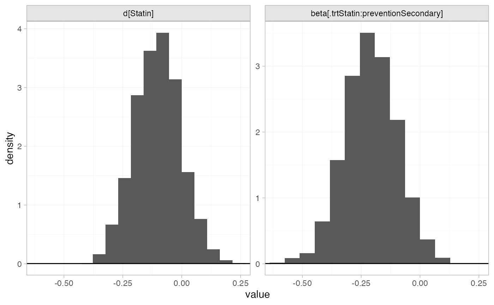
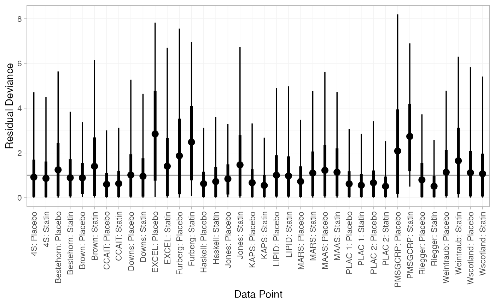
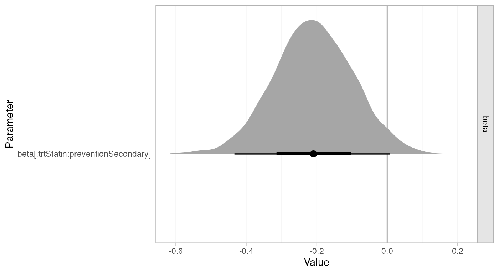

library(multinma)
options(mc.cores = parallel::detectCores())#> For execution on a local, multicore CPU with excess RAM we recommend calling
#> options(mc.cores = parallel::detectCores())
#>
#> Attaching package: 'multinma'
#> The following objects are masked from 'package:stats':
#>
#> dgamma, pgamma, qgammaThis vignette describes the analysis of 19 trials comparing statins
to placebo or usual care (Dias et al. 2011). The data are
available in this package as statins:
head(statins)
#> studyn studyc trtn trtc prevention r n
#> 1 1 4S 1 Placebo Secondary 256 2223
#> 2 1 4S 2 Statin Secondary 182 2221
#> 3 2 Bestehorn 1 Placebo Secondary 4 125
#> 4 2 Bestehorn 2 Statin Secondary 1 129
#> 5 3 Brown 1 Placebo Secondary 0 52
#> 6 3 Brown 2 Statin Secondary 1 94Dias et al. (2011) used these data to demonstrate
meta-regression models adjusting for the binary covariate
prevention (primary or secondary prevention), which we
recreate here.
Setting up the network
We have data giving the number of deaths (r) out of the
total (n) in each arm, so we use the function
set_agd_arm() to set up the network. We set placebo as the
network reference treatment.
statin_net <- set_agd_arm(statins,
study = studyc,
trt = trtc,
r = r,
n = n,
trt_ref = "Placebo")
statin_net
#> A network with 19 AgD studies (arm-based).
#>
#> ------------------------------------------------------- AgD studies (arm-based) ----
#> Study Treatment arms
#> 4S 2: Placebo | Statin
#> Bestehorn 2: Placebo | Statin
#> Brown 2: Placebo | Statin
#> CCAIT 2: Placebo | Statin
#> Downs 2: Placebo | Statin
#> EXCEL 2: Placebo | Statin
#> Furberg 2: Placebo | Statin
#> Haskell 2: Placebo | Statin
#> Jones 2: Placebo | Statin
#> KAPS 2: Placebo | Statin
#> ... plus 9 more studies
#>
#> Outcome type: count
#> ------------------------------------------------------------------------------------
#> Total number of treatments: 2
#> Total number of studies: 19
#> Reference treatment is: Placebo
#> Network is connectedThe prevention variable in the statins data
frame will automatically be available to use in a meta-regression
model.
Meta-analysis models
We fit fixed effect (FE) and random effects (RE) models, with a
meta-regression on the binary covariate prevention.
Fixed effect meta-regression
We start by fitting a FE model. We use \(\mathrm{N}(0, 100^2)\) prior distributions
for the treatment effect \(d_\mathrm{Statin}\), study-specific
intercepts \(\mu_j\), and regression
coefficient \(\beta\). We can examine
the range of parameter values implied by these prior distributions with
the summary() method:
summary(normal(scale = 100))
#> A Normal prior distribution: location = 0, scale = 100.
#> 50% of the prior density lies between -67.45 and 67.45.
#> 95% of the prior density lies between -196 and 196.The model is fitted with the nma() function, with a
fixed effect model specified by trt_effects = "fixed". The
regression formula ~ .trt:prevention means
that interaction of primary/secondary prevention with treatment will be
included; the .trt special variable indicates treatment,
and prevention is in the original data set.
statin_fit_FE <- nma(statin_net,
trt_effects = "fixed",
regression = ~.trt:prevention,
prior_intercept = normal(scale = 100),
prior_trt = normal(scale = 100),
prior_reg = normal(scale = 100))
#> Note: No treatment classes specified in network, any interactions in `regression` formula will be separate (independent) for each treatment.
#> Use set_*() argument `trt_class` and nma() argument `class_interactions` to change this.Basic parameter summaries are given by the print()
method:
statin_fit_FE
#> A fixed effects NMA with a binomial likelihood (logit link).
#> Regression model: ~.trt:prevention.
#> Inference for Stan model: binomial_1par.
#> 4 chains, each with iter=2000; warmup=1000; thin=1;
#> post-warmup draws per chain=1000, total post-warmup draws=4000.
#>
#> mean se_mean sd 2.5% 25% 50% 75%
#> beta[.trtStatin:preventionSecondary] -0.21 0.0 0.11 -0.43 -0.28 -0.21 -0.13
#> d[Statin] -0.10 0.0 0.10 -0.29 -0.17 -0.10 -0.04
#> lp__ -7246.80 0.1 3.45 -7254.47 -7249.03 -7246.43 -7244.29
#> 97.5% n_eff Rhat
#> beta[.trtStatin:preventionSecondary] 0.00 2613 1
#> d[Statin] 0.09 2458 1
#> lp__ -7241.16 1217 1
#>
#> Samples were drawn using NUTS(diag_e) at Tue Jan 16 10:36:56 2024.
#> For each parameter, n_eff is a crude measure of effective sample size,
#> and Rhat is the potential scale reduction factor on split chains (at
#> convergence, Rhat=1).By default, summaries of the study-specific intercepts \(\mu_j\) are hidden, but could be examined
by changing the pars argument:
The prior and posterior distributions can be compared visually using
the plot_prior_posterior() function:
plot_prior_posterior(statin_fit_FE, prior = c("trt", "reg"))
Random effects meta-regression
We now fit a RE model. We use \(\mathrm{N}(0, 100^2)\) prior distributions
for the treatment effect \(d_\mathrm{Statin}\), study-specific
intercepts \(\mu_j\), and regression
coefficient \(\beta\). We use a \(\textrm{half-N}(0, 5^2)\) prior
distribution for the heterogeneity standard deviation \(\tau\). We can examine the range of
parameter values implied by these prior distributions with the
summary() method:
summary(normal(scale = 100))
#> A Normal prior distribution: location = 0, scale = 100.
#> 50% of the prior density lies between -67.45 and 67.45.
#> 95% of the prior density lies between -196 and 196.
summary(half_normal(scale = 5))
#> A half-Normal prior distribution: location = 0, scale = 5.
#> 50% of the prior density lies between 0 and 3.37.
#> 95% of the prior density lies between 0 and 9.8.Again, the model is fitted with the nma() function, now
with trt_effects = "random". We increase
adapt_delta to 0.99 to remove a small number of divergent
transition errors (the default for RE models is set to 0.95).
statin_fit_RE <- nma(statin_net,
trt_effects = "random",
regression = ~.trt:prevention,
prior_intercept = normal(scale = 100),
prior_trt = normal(scale = 100),
prior_reg = normal(scale = 100),
prior_het = half_normal(scale = 5),
adapt_delta = 0.99)
#> Note: No treatment classes specified in network, any interactions in `regression` formula will be separate (independent) for each treatment.
#> Use set_*() argument `trt_class` and nma() argument `class_interactions` to change this.Basic parameter summaries are given by the print()
method:
statin_fit_RE
#> A random effects NMA with a binomial likelihood (logit link).
#> Regression model: ~.trt:prevention.
#> Inference for Stan model: binomial_1par.
#> 4 chains, each with iter=2000; warmup=1000; thin=1;
#> post-warmup draws per chain=1000, total post-warmup draws=4000.
#>
#> mean se_mean sd 2.5% 25% 50% 75%
#> beta[.trtStatin:preventionSecondary] -0.28 0.01 0.27 -0.83 -0.42 -0.27 -0.14
#> d[Statin] -0.08 0.01 0.21 -0.54 -0.19 -0.08 0.03
#> lp__ -7255.85 0.16 5.14 -7266.55 -7259.22 -7255.68 -7252.31
#> tau 0.25 0.01 0.21 0.01 0.09 0.19 0.35
#> 97.5% n_eff Rhat
#> beta[.trtStatin:preventionSecondary] 0.28 1323 1
#> d[Statin] 0.32 1245 1
#> lp__ -7246.54 1020 1
#> tau 0.75 721 1
#>
#> Samples were drawn using NUTS(diag_e) at Tue Jan 16 10:37:05 2024.
#> For each parameter, n_eff is a crude measure of effective sample size,
#> and Rhat is the potential scale reduction factor on split chains (at
#> convergence, Rhat=1).By default, summaries of the study-specific intercepts \(\mu_j\) and study-specific relative effects
\(\delta_{jk}\) are hidden, but could
be examined by changing the pars argument:
The prior and posterior distributions can be compared visually using
the plot_prior_posterior() function:
plot_prior_posterior(statin_fit_RE, prior = c("trt", "reg", "het"))
Model fit and comparison
Model fit can be checked using the dic() function:
(statin_dic_FE <- dic(statin_fit_FE))
#> Residual deviance: 46.2 (on 38 data points)
#> pD: 21.9
#> DIC: 68.1
(statin_dic_RE <- dic(statin_fit_RE))
#> Residual deviance: 42.6 (on 38 data points)
#> pD: 25.1
#> DIC: 67.8The DIC is very similar between FE and RE models, so we might choose the FE model based on parsimony. The residual deviance statistics are larger than the number of data points, suggesting that some data points are not fit well.
We can also examine the residual deviance contributions with the
corresponding plot() method.
plot(statin_dic_FE)
plot(statin_dic_RE)
There are a number of studies which are not fit well under either model, having posterior mean residual deviance contributions greater than 1, and should be investigated to see if there are further substantive differences between studies.
Further results
We can produce estimates of the relative effect of statins
vs. placebo for either primary or secondary prevention, using the
relative_effects() function. The newdata
argument specifies a data frame containing the levels of the covariate
prevention that we are interested in, and the
study argument is used to specify a column of
newdata for an informative label.
statin_releff_FE <- relative_effects(statin_fit_FE,
newdata = data.frame(prevention = c("Primary", "Secondary")),
study = prevention)
statin_releff_FE
#> ---------------------------------------------------------------- Study: Primary ----
#>
#> Covariate values:
#> prevention
#> Primary
#>
#> mean sd 2.5% 25% 50% 75% 97.5% Bulk_ESS Tail_ESS Rhat
#> d[Primary: Statin] -0.1 0.1 -0.29 -0.17 -0.1 -0.04 0.09 2470 2436 1
#>
#> -------------------------------------------------------------- Study: Secondary ----
#>
#> Covariate values:
#> prevention
#> Secondary
#>
#> mean sd 2.5% 25% 50% 75% 97.5% Bulk_ESS Tail_ESS Rhat
#> d[Secondary: Statin] -0.31 0.05 -0.42 -0.35 -0.31 -0.28 -0.21 4799 3483 1The plot() method may be used to visually compare these
estimates:
plot(statin_releff_FE,
ref_line = 0)Model parameters may be plotted with the corresponding
plot() method:
plot(statin_fit_FE,
pars = "beta",
ref_line = 0,
stat = "halfeye")
Whilst the 95% Credible Interval includes zero, there is a suggestion that statins are more effective for secondary prevention.